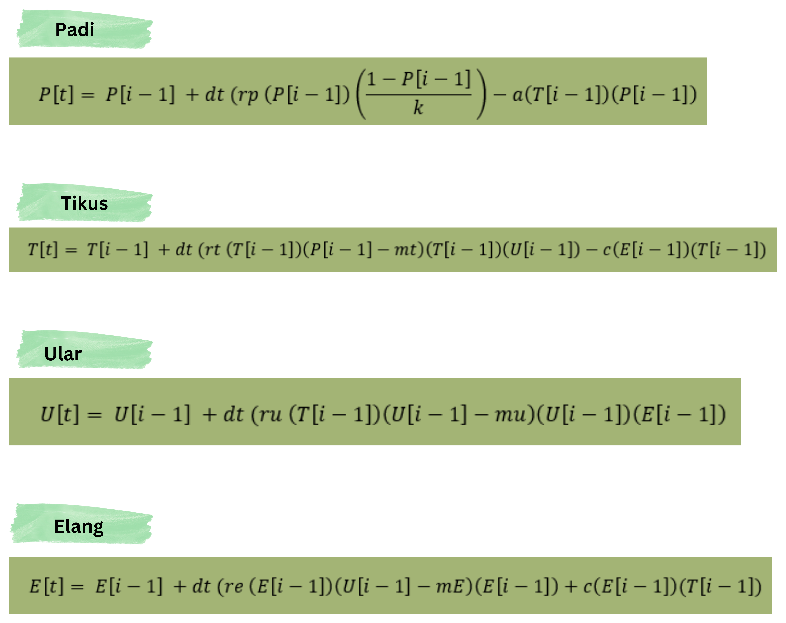
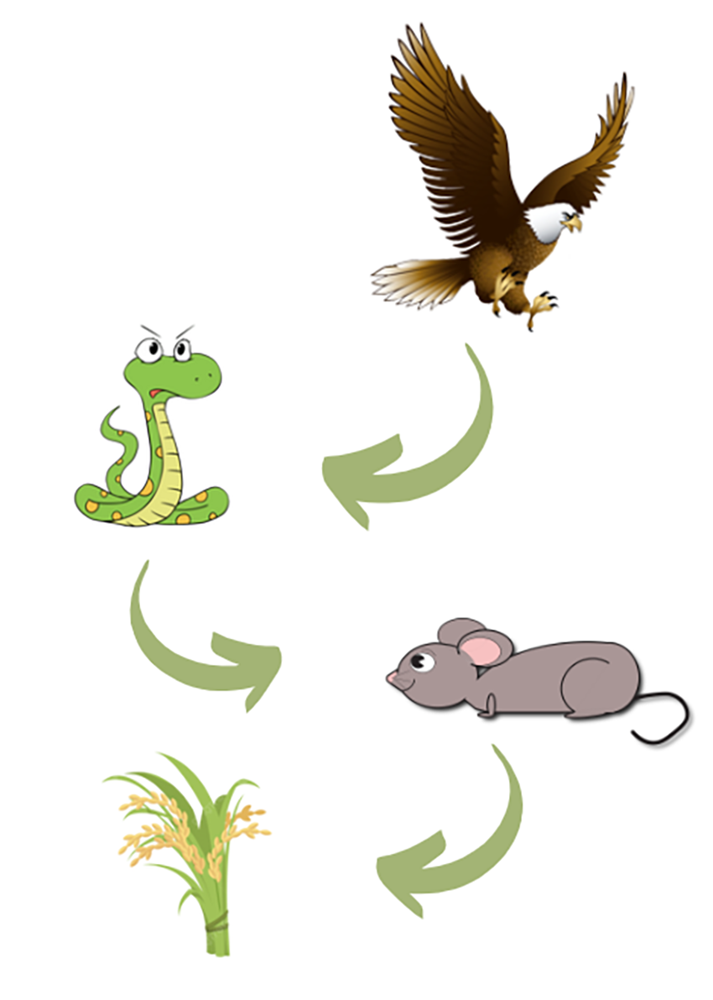

Disusun Oleh Kelompok 6
Definisi Model Prey-Predator
Model prey-predator adalah salah satu model interaksi makhluk hidup dalam suatu ekosistem dimana terdapat
interaksi antara mangsa (prey) dan pemangsa (predator) yang dapat mengganggu keseimbangan ekosistem jika
terjadi ketidakseimbangan jumlah populasi
Model Prey-Predator pada Peristiwa Rantai Makanan
Rantai makanan atau jaringan makanan adalah suatu ekosistem makhluk hidup di mana suatu organisme memakan satu
sama lain untuk mendapatkan energi dan nutrisi dari organisme yang dimakan. Dalam rantai makanan yang kompleks
terdapat produsen, konsumen tingkat 1, konsumen tingkat 2, konsumen tingkat akhir, dan dekomposer atau
pengurai. Oleh karena itu, rantai makanan merupakan salah satu peristiwa yang berkaitan dengan model
matematika, yaitu model prey-predator.
Visualisasi dalam Sains Matematika
Aplikasi Model Prey - Predator Rantai Makanan dalam Ekosistem Sawah
Yolanda Dwi Putri Anzita
Radhika
Nadia Raissa Muthi
Riska Agustina
119160050
120160002
121160049
121160001

Arista Yosafat Keliat
Frenklyn Fenuel Febe
Rajib Sovbandi
121160045
121160061
121160090

Rantai Makanan pada Ekosistem Sawah
Ekosistem sawah merupakan ekosistem lahan basah buatan yang sangat berguna bagi kehidupan manusia sebagai penghasil bahan pangan. Ekosistem Sawah merupakan salah satu ekosistem dimana terdapat makhluk hidup yang saling berinteraksi satu sama lain sehingga menyebabkan adanya peristiwa rantai makanan didalamnya. salah satu contoh populasi makhluk hidup yang terdapat pada Ekosistem sawah antara lain adalah Padi, Tikus, Ular Sawah, dan Elang.
